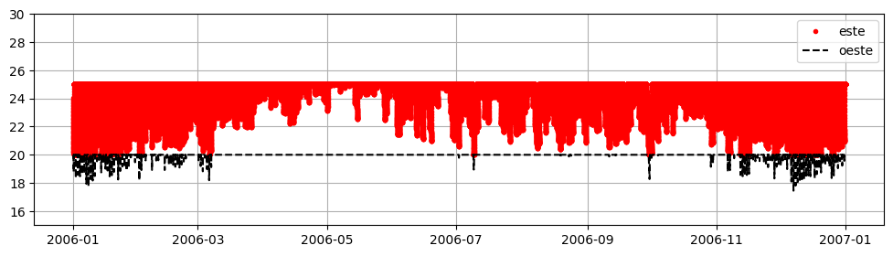
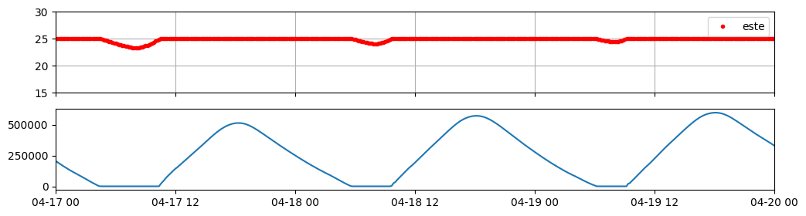
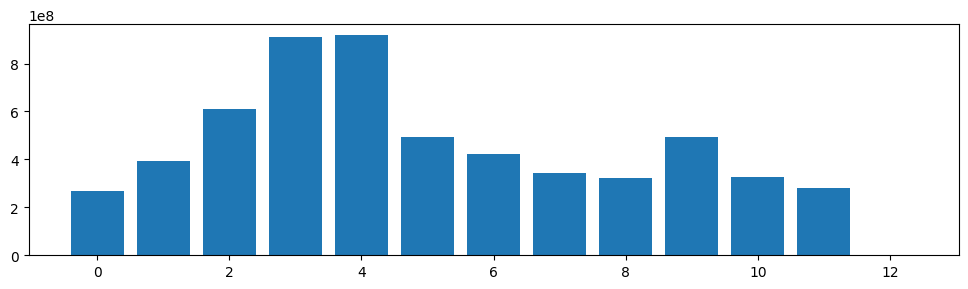
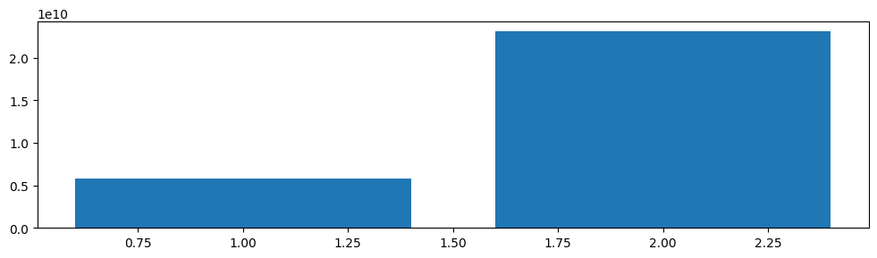

import pandas as pd
import matplotlib.pyplot as plt
from iertools.read import read_sql
from dateutil.parser import parsef = "../osm/007_CB_aa/run/eplusout.sql"
aa = read_sql(f,alias=True).data
aa = aa[aa.index.year==2006]
aa| variable_name | ESTE IDEAL LOADS AIR SYSTEM:Zone Ideal Loads Zone Total Cooling Energy (J) | ESTE:Zone Air Relative Humidity (%) | ESTE:Zone Air Temperature (C) | Ti_ESTE | To | OESTE IDEAL LOADS AIR SYSTEM:Zone Ideal Loads Zone Total Cooling Energy (J) | OESTE:Zone Air Relative Humidity (%) | OESTE:Zone Air Temperature (C) | Ti_OESTE |
|---|---|---|---|---|---|---|---|---|---|
| date | |||||||||
| 2006-01-01 00:10:00 | 0.000000 | NaN | NaN | 24.034925 | NaN | 277224.068605 | NaN | NaN | 20.0 |
| 2006-01-01 00:20:00 | 0.000000 | NaN | NaN | 23.930461 | NaN | 263971.286707 | NaN | NaN | 20.0 |
| 2006-01-01 00:30:00 | 0.000000 | NaN | NaN | 23.827980 | NaN | 251053.777571 | NaN | NaN | 20.0 |
| 2006-01-01 00:40:00 | 0.000000 | NaN | NaN | 23.727139 | NaN | 238517.773899 | NaN | NaN | 20.0 |
| 2006-01-01 00:50:00 | 0.000000 | NaN | NaN | 23.627973 | NaN | 226365.196577 | NaN | NaN | 20.0 |
| ... | ... | ... | ... | ... | ... | ... | ... | ... | ... |
| 2006-12-31 23:10:00 | 59574.351221 | NaN | NaN | 25.000000 | NaN | 494338.388815 | NaN | NaN | 20.0 |
| 2006-12-31 23:20:00 | 51407.253331 | NaN | NaN | 25.000000 | NaN | 478541.926915 | NaN | NaN | 20.0 |
| 2006-12-31 23:30:00 | 43335.987196 | NaN | NaN | 25.000000 | NaN | 462901.793326 | NaN | NaN | 20.0 |
| 2006-12-31 23:40:00 | 35369.236852 | NaN | NaN | 25.000000 | NaN | 447407.541928 | NaN | NaN | 20.0 |
| 2006-12-31 23:50:00 | 27522.971685 | NaN | NaN | 25.000000 | NaN | 432048.344807 | NaN | NaN | 20.0 |
52559 rows × 9 columns
fig, ax = plt.subplots(figsize=(12,3))
ax.plot(aa.Ti_ESTE,"r.",label="este")
ax.plot(aa.Ti_OESTE,"k--",label="oeste")
ax.set_ylim(15,30)
ax.grid()
ax.legend()
fig, (ax,ax2) = plt.subplots(2,1,figsize=(12,3),sharex=True)
f1 = parse("2006-04-17")
f2 = f1 + pd.Timedelta("3D")
ax.plot(aa.Ti_ESTE,"r.",label="este")
ax2.plot(aa["ESTE IDEAL LOADS AIR SYSTEM:Zone Ideal Loads Zone Total Cooling Energy (J)"])
ax.set_ylim(15,30)
ax.set_xlim(f1,f2)
ax.grid()
ax.legend()
zona = "ESTE IDEAL LOADS AIR SYSTEM:Zone Ideal Loads Zone Total Cooling Energy (J)"
fig, ax = plt.subplots(figsize=(12,3) )
ax.bar(
range(13),
aa[zona].resample("ME").sum()
)
aa.columnsIndex(['ESTE IDEAL LOADS AIR SYSTEM:Zone Ideal Loads Zone Total Cooling Energy (J)',
'ESTE:Zone Air Relative Humidity (%)', 'ESTE:Zone Air Temperature (C)',
'Ti_ESTE', 'To',
'OESTE IDEAL LOADS AIR SYSTEM:Zone Ideal Loads Zone Total Cooling Energy (J)',
'OESTE:Zone Air Relative Humidity (%)',
'OESTE:Zone Air Temperature (C)', 'Ti_OESTE'],
dtype='str', name='variable_name')aa[[este,oeste]].resample("YE").sum().valuesarray([[5.78833154e+09, 2.30698337e+10]])este = "ESTE IDEAL LOADS AIR SYSTEM:Zone Ideal Loads Zone Total Cooling Energy (J)"
oeste = "OESTE IDEAL LOADS AIR SYSTEM:Zone Ideal Loads Zone Total Cooling Energy (J)"
fig, ax = plt.subplots(figsize=(12,3) )
ax.bar(
[1,2],
aa[[este,oeste]].resample("YE").sum().values.flatten()
)